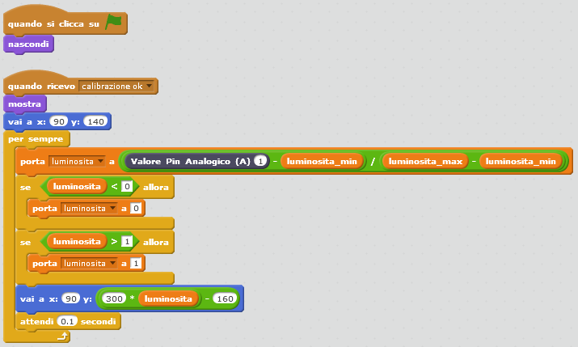
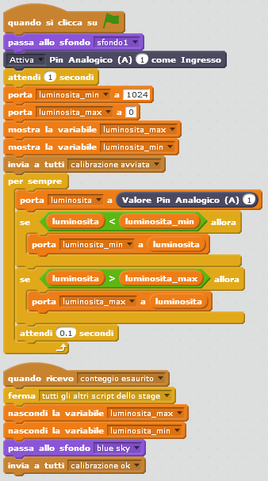
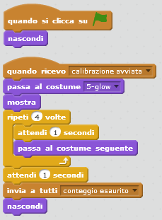

risorse | tramonto in scratch
Questo è uno studio circa un progetto di interfacciamento di Scratch con Arduino da svolgere in un CoderDojo. L'idea è di utilizzare una fotoresistore per captare il livello di luminosità ambientale e adattare di conseguenza lo scenario di Scratch. In caso di luce intensa, il sole brillerà alto nel cielo, calando e infine tramontando al sopraggiungere del buio:
In presenza molta di luce, il sole dovrà brillare alto.
In presenza poca di luce, il sole dovrà abbassarsi e la scena oscurarsi.
In assenza di luce, il sole dovrà tramontare dietro al paesaggio, lasciando la scena nell'ombra.
Il circuito per l'acquisizione del livello di luminosità ambientale è un semplice partitore di tensione che comprende un fotoresistore, un componente elettronico la cui resistenza varia al variare dell'intensità luminosa che lo colpisce. Il partitore di tensione è un circuito che consente di trasformare la variazione di resistenza in variazione di tensione, che è la grandezza che Arduino è in grado di acquisire.
Lo schema elettrico del circuito elettronico.
All'aumentare della luminosità, la resistenza del fotoresistore diminuisce, causando l'aumento della tensione al pin A1 di Arduino; al diminuire della luminosità la sua resistenza aumenta, facendo di conseguenza calare la tensione al centro del partitore. Il voltaggio misurato al pin A1 dà dunque un'indicazione diretta della quantità di luce che investe il fotoresistore: maggiore è il suo valore, maggiore è il livello di luminosità dell'ambiente. Sarà questo valore che verrà utilizzato nel progetto Scratch per determinare la posizione dello sprite del sole e il livello di ombreggiatura del paesaggio. Il cablaggio del circuito si riduce a due componenti e quattro conduttori:
Il cablaggio del partitore di tensione.
Il circuito finale.
L'acquisizione del valore di luminosità (sappiamo ora trattarsi in realtà di un valore di tensione che dipende dalla quantità di luce che colpisce il fotoresistore) avviene per mezzo del modulo S2A_fm, descritto a suo tempo qui. Il progetto consta di tre sprite principali:
Per comodità, nel progetto il valore della luminosità è stato normalizzato nell'intervallo 0÷1, con 0 che indica il livello minimo di luminosità (il buio), 1 quello massimo (fotoresistore in piena luce). In questo modo è relativamente facile programmare il moto dello sprite Sole tra due coordinate y prefissate:
Lo script dello sprite Sole.
Tralasciando momentaneamente il fatto che lo sprite inizialmente si nasconde ed attende il ricevimento del messaggio calibrazione ok prima di iniziare la sua attività, si nota che il ciclo principale è composto di quattro fasi:
luminosita_min e luminosita_max, sulle quali torneremo in seguito;Quando il livello di luminosità acquisito — rappresentato dal blocco Valore Pin Analogico (A) 1 — è massimo, il valore della variabile luminosita è 1 e l'ordinata assunta da Sole è pari a 300 * 1 - 160 = 300 - 160 = 140; quando il livello di luminosità acquisito è minimo, il valore assunto da luminosita è nullo, e lo sprite si sposta perciò all'ordinata 300 * 0 - 160 = 0 - 160 = -160. Al variare dell'intensità luminosa tra il valore massimo (luminosita_max) e quello minimo (luminosita_min), il sole si sposterà in sincrono tra gli estremi di ordinata y=+180 e y=-160.
Una logica del tutto analoga si applica all'effetto di trasparenza dello sprite Notte: quando luminosita è pari a 1, l'effetto trasparenza è massimo (100), e l'ombreggiatura è del tutto assente; quando è minimo, l'effetto trasparenza è inibito (0) e la scena appare completamente nera:
Lo script dello sprite Notte.
Lo sprite Cespuglio serve solo per permettere al sole di tramontare:
In evidenza lo sprite Cespuglio che, posto in primo piano, copre Sole.
Come si determinano i valori di luminosità minimo e massimo? In linea di principio si potrebbe stabilire che il valore minimo — buio assoluto — corrisponde alla tensione nulla, mentre quello massimo — luminosità “infinita” — alla tensione di alimentazione, ovvero 5V. Leggendo le specifiche dell'hardware di Arduino scopriremmo che i valori numerici associati alle due tensioni nominali sono rispettivamente 0 e 1023.
Non è tuttavia detto che le variazioni di luce effettive coprano tutto l'intervallo ipotizzato; più realisticamente i valori acquisiti si troveranno all'interno di un intervallo più piccolo, vuoi per le caratteristiche dell'ambiente in cui si opera, vuoi per le peculiarità costruttive del sensore. Per questa ragione conviene lasciare al software la responsabilità di stabilire quali siano le soglie di funzionamento corrette. La calibrazione è la procedura che si occupa di ciò.
La procedura di calibrazione è piuttosto semplice: si limita a campionare il livello di luminosità ad intervalli regolari per un lasso di tempo predefinito, aggiornando continuamente il livello minimo e massimo registrati: nel mentre sarà nostra cura fare in modo che il fotoresistore sia investito dalla maggior quantità di luce possibile, in modo da realizzare la lettura del valore massimo, quindi porlo in una zona buia (oscurandolo magari con la mano), per determinare correttamente il valore minimo. Della calibrazione si occupa lo sfondo:
La procedura di calibrazione.
Per rendere la procedura di calibrazione più amichevole, è stato aggiunto un conto alla rovescia della durata di cinque secondi, che scandisce il tempo che passa e mostra all'utente i livelli minimo e massimo registrati fino a quel punto:
Lo script che regola la durata della calibrazione.
Due secondi la termine della calibrazione.
Terminata la fase di calibrazione, si potrà far tramontare il sole in Scratch oscurando artificialmente il fotoresistore!
Scarica s2a_tramonto.sb2, il progetto per Scratch 2.0 completo.
Pagina modificata il 09/08/2016